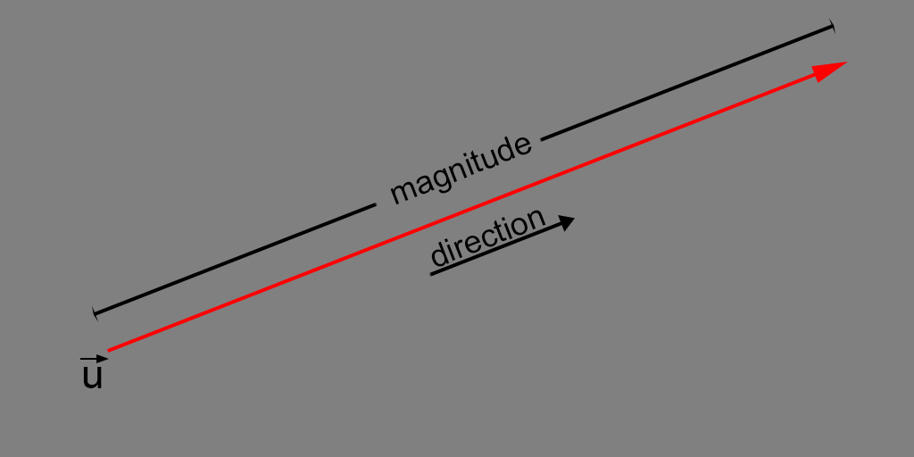
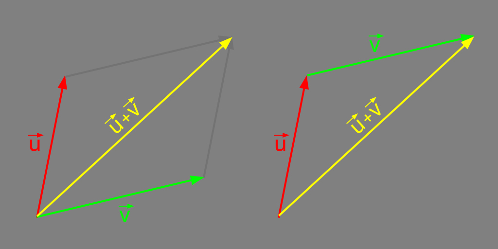
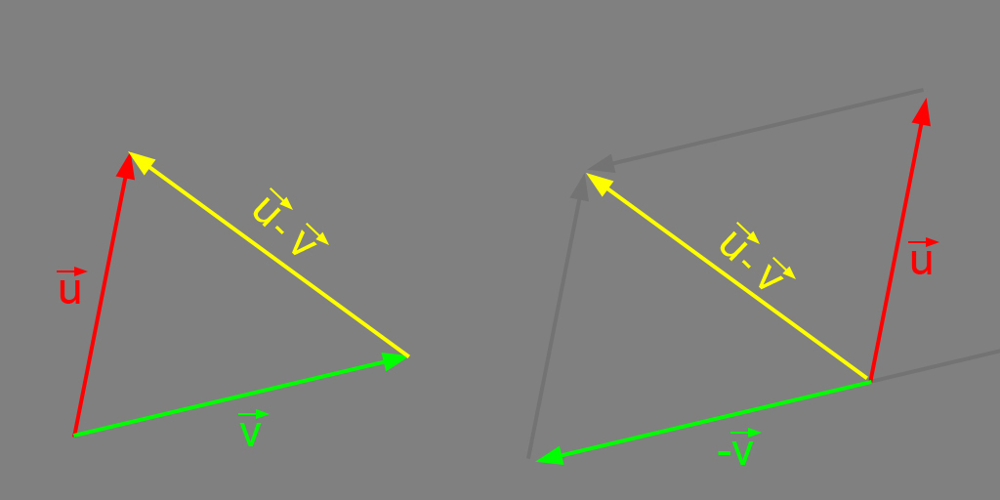
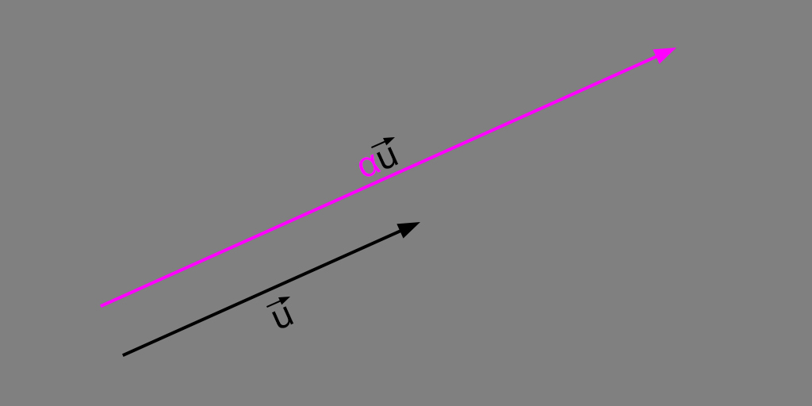
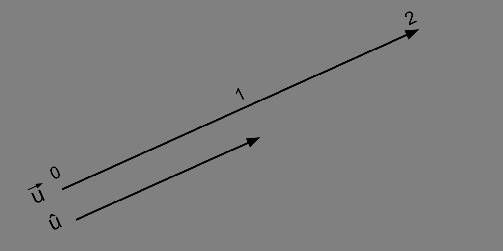
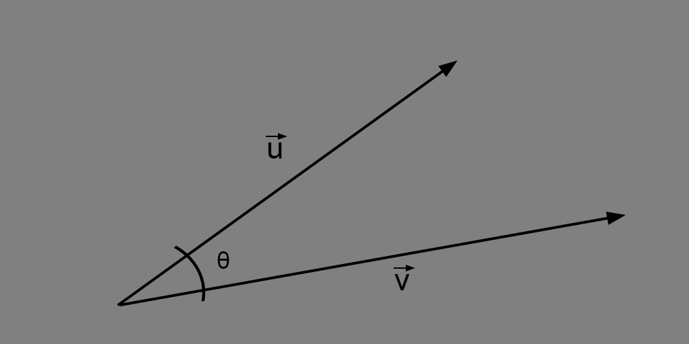
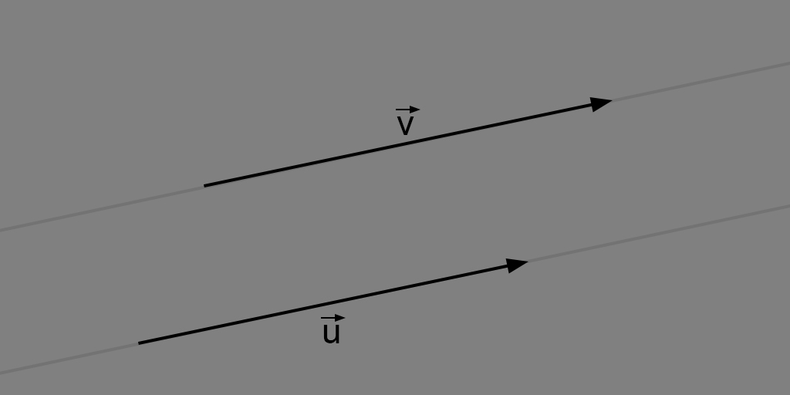
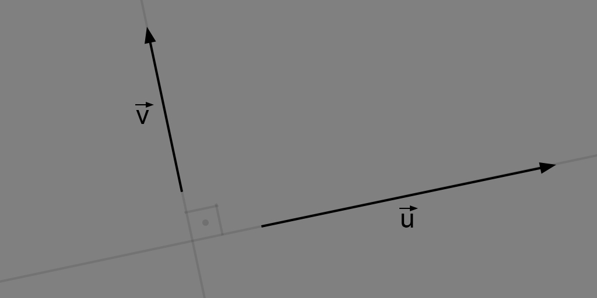

Linear Algebra - Vectors#
import numpy as np
What is a vector?#
A vector \(\large \vec{v}\) is a mathematical entity which has magnitude and direction. 
Vector operations#
All the following operations are applicable to any vector in \(\large \mathbb{R}^n\).
Vector addition#
The addition of two vectors \(\large \vec{u}\) and \(\large \vec{v}\) is done by the sum of their correspondent components, resulting in another vector.

For example:
u = np.array([[3, 7]])
v = np.array([[2, 5]])
print(u.T, end=" = u\n\n")
print(v.T, end=" = v\n\n")
print((u + v).T, end=" = u + v")
Vector subtraction#
Similarly to addition, the subtraction of two vectors \(\large \vec{u}\) and \(\large \vec{v}\) is done by the subtraction of their correspondent components, resulting in another vector.

For example:
u = np.array([[3, 7]])
v = np.array([[2, 5]])
print(u.T, end=" = u\n\n")
print(v.T, end=" = v\n\n")
print((u - v).T, end=" = u - v")
Scalar multiplication#
The scalar multiplication is the elementwise multiplication by a scalar number \(\large \alpha\). The same rule can be applied to divisions.

For example:
a = 2
u = np.array([[3, 7]])
print(a, end=" = a\n\n")
print(u.T, end=" = u\n\n")
print(a*u.T, end=" = au")
Dot product#
Dot product is an algebraic operation, which has a huge number of applications. As a result, we have a scalar value.
For example:
u = np.array([3, 7])
v = np.array([2, 5])
print(u, end=" = u\n\n")
print(v, end=" = v\n\n")
print(np.dot(u, v), end=" = u.v")
Unit vector#
Unit vector (or versor) is a vector which has the magnitude equal to 1. The magnitude of a vector is based on the euclidean norm and can be found by:
Basically, a unit vector is a normalized vector, like:

For example:
u = np.array([3, 4])
u_ = np.sum(u**2)**0.5
print(u, end=" = u\n\n")
print(u_, end=" = ||u||\n\n")
print(u/u_, end=" = û")
Angle between vectors#
Given the geometric definition of dot product:
so,

For example:
u = np.array([2, 1])
v = np.array([3, 3])
uv = np.dot(u, v)
u_ = np.sum(u**2)**0.5
v_ = np.sum(v**2)**0.5
rad = np.arccos(uv/(u_*v_))
print(u, end=" = u\n\n")
print(v, end=" = v\n\n")
print(f'{np.rad2deg(rad):.02f}', end=" = θ")
Orthogonality and Parallelism#
Two vectors are parallel or \(\large \vec{u} // \vec{v}\) when there is a number \(k\) which generalizes the relationship:
What it means that:
In other words, two vectors are parallel when their components are proportional.

For example:
u = np.array([2, 3])
v = np.array([6, 9])
print(u, end=" = u\n\n")
print(v, end=" = v\n\n")
print(f'{u/v}', end=" = k")
Two vectors are orthogonal or \(\large \vec{u} \bot \vec{v}\) when the angle \(\theta\) between of them are 90° or their dot product is equal to 0.

For example:
We can find it by calculating the dot product:
or by finding \(\theta\):
u = np.array([2, 1])
v = np.array([-2, 4])
uv = np.dot(u, v)
u_ = np.sum(u**2)**0.5
v_ = np.sum(v**2)**0.5
rad = np.arccos(uv/(u_*v_))
print(u, end=" = u\n\n")
print(v, end=" = v\n\n")
print(uv, end=" = u.v\n\n")
print(f'{np.rad2deg(rad):.02f}', end=" = θ")